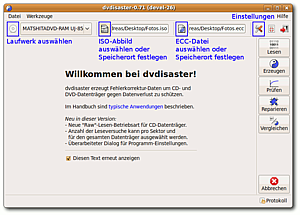
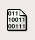
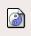
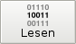
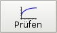
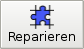
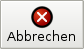

dvdisaster
Dieser Artikel wurde für die folgenden Ubuntu-Versionen getestet:
Ubuntu 14.04 Trusty Tahr
Zum Verständnis dieses Artikels sind folgende Seiten hilfreich:
dvdisaster  ist ein Werkzeug, mit dem man besonders sichere Datensicherungen (engl "Backup") auf CD, DVD oder Blu-ray Disc (BD) erstellen kann, indem zu den eigentlichen Daten zusätzlich Fehlerkorrektur-Daten (ECC, engl. "Error Correction Code") erstellt werden, mit deren Hilfe verlorene Daten aufgrund fehlerhafter Sektoren auf dem Datenträger rekonstruiert werden können.
ist ein Werkzeug, mit dem man besonders sichere Datensicherungen (engl "Backup") auf CD, DVD oder Blu-ray Disc (BD) erstellen kann, indem zu den eigentlichen Daten zusätzlich Fehlerkorrektur-Daten (ECC, engl. "Error Correction Code") erstellt werden, mit deren Hilfe verlorene Daten aufgrund fehlerhafter Sektoren auf dem Datenträger rekonstruiert werden können.
Installation¶
Folgendes Paket muss installiert [1] werden:
dvdisaster (universe )
 mit apturl
mit apturl
Paketliste zum Kopieren:
sudo apt-get install dvdisaster
sudo aptitude install dvdisaster
Nach erfolgreicher Installation kann dvdisaster gestartet werden [2].
Grundlegendes¶
Hinweis:
Wer es eilig hat, kann diesen Abschnitt auch überspringen und bei "Benutzung" fortfahren.
Nutzt man die heutzutage gängigen optischen Speichermedien (CD, DVD und immer mehr auch die Blu-ray Disc) für Datensicherungen, muss man sich der Gefahr bewusst sein, dass Daten durch die Entstehung fehlerhafter Sektoren verloren gehen. Fehlerhafte Sektoren können durch mechanische Beschädigung des Mediums (z.B. Kratzer) entstehen oder durch Alterung. Letzteres ist besonders bei DVD±R-Medien ein Problem, da diese bereits nach wenigen Jahren fehlerhafte Sektoren enthalten können. Das Positive an diesen Nachteilen ist allerdings, dass der Zerfall zwar stetig aber langsam vonstatten geht. Hier kommt dvdisaster ins Spiel.
Zusätzlich zur Datensicherung werden nach einem komplizierten Algorithmus ECC-Daten erstellt, mit denen die gegebenenfalls defekte Datensicherung repariert werden kann, sofern der Beschädigungsgrad nur ein gewisses Ausmaß hat. Um den richtigen Zeitpunkt der Reparatur herauszufinden, überprüft man den Datenträger mit dvdisaster regelmäßig (z.B. alle 6 Monate). Sollten erste Fehler auftreten, wird dvdisaster dies melden und anbieten, mit Hilfe der ECC-Daten ein neues Abbild zu generieren.
Benutzung¶
Achtung!
Auf der dvdisaster-Projektseite befindet sich eine sehr umfangreiche Dokumentation zu allen Einstellungen, sowie Zusatzinformationen. Daher werden in diesem Artikel nur die wichtigsten Funktionen von dvdisaster erklärt.

Vorbereitung¶
Zunächst muss die Datensicherung als ISO-Abbild[3] vorliegen. Dieses kann mit einer Vielzahl von Programmen erstellt werden oder mit der Funktion "Lesen", wenn bereits ein Datenträger existiert, zu dem man nachträglich eine Fehlerkorrektur-Datei anlegen möchte.
Hauptfenster¶
Im Hauptfenster befinden sich am oberen Fensterrand (von links nach rechts) die Auswahl des Laufwerks, des ISO-Abbildes und der ECC-Datei, sowie die Schaltflächen für das Einstellungs-Menü das Benutzerhandbuch und das Beenden des Programms.
Am rechten Rand befinden sich die Schaltfläche zum Starten der verschiedenen Aktionen: "Lesen", "Erzeugen", "Prüfen", "Reparieren", "Vergleichen", "Abbrechen" und "Protokoll".
| Aktionen | |||
| Funktion | Kommentar | ||
| Hier kann man das Laufwerk auswählen | |||
|  | Hier kann man einen Speicherort für das ISO-Abbild festlegen bzw. ein ISO-Abbild laden | ||
|  | Hier kann man einen Speicherort für die Fehlerkorrektur-Datei festlegen bzw. eine Fehlerkorrektur-Datei laden | ||
| Hier kommt man in die Einstellungen. Das Symbol kann je nach Desktop-Thema abweichen. | |||
|  | Diese Funktion wird benötigt, wenn man eine Fehlerkorrektur-Datei von einem Datenträger erstellen möchte. Eine Fehlerkorrektur-Datei kann nur erstellt werden, wenn der Datenträger fehlerfrei eingelesen wurde. Ist dies der Fall, wird der eingelesene Datenträger als ISO-Abbild abgespeichert. | ||
| Diese Funktion wird benötigt, um eine Fehlerkorrektur-Datei zu erstellen oder ein ISO-Abbild mit Fehlerkorrektur-Daten zu erweitern. Für beide Fälle muss ein ISO-Abbild der Datensicherung vorliegen. | |||
|  | Mit dieser Funktion lässt sich ein Datenträger auf Lesefehler überprüfen. Zur Beurteilung der Ergebnisse soll an dieser Stelle an die Dokumentations-Seite verwiesen werden, da sich schlechte Datenträger durch viele Merkmale auszeichnen können. | ||
|  | Mit dieser Funktion kann man ein defektes ISO-Abbild reparieren. Dazu benötigt man entweder eine Fehlerkorrektur-Datei oder ein mit Fehlerkorrektur-Daten erweitertes ISO-Abbild. | ||
| Diese Funktion bietet Informationen über den Datenträger, die Abbild-Datei und/oder die Fehlerkorrektur-Datei. | |||
|  | Bricht einen beliebigen Vorgang ab. | ||
| Zeigt das von dvdisaster erstellte Protokoll an. | |||
Wichtige Einstellungen¶
| Wichtige Einstellungen | |||
| Reiter | Einstellung | Kommentar | |
| "Abbild" | Abbild-Größe ermitteln durch | "ECC/RS02" zum Einlesen von Datensicherungen, die Fehlerkorrektur-Daten enthalten. Für alles Andere "ISO/UDF" | |
| Lese-Verfahren | "Linear" | ||
| "Laufwerk" | Warte xx Sekunden auf das Hochdrehen des Laufwerks. | Die Zeit sollte nicht zu kurz eingestellt werden, da Lesefehler angezeigt werden können, wenn während des Hochfahr-Vorgangs bereits eingelesen wird. | |
| "RAW"-Lese-Verfahren | Normalerweise "0x20". "0x21" nur in Ausnahmefällen | ||
| "Leseversuche" | Sektoren "raw" lesen und untersuchen | Sollte aktiviert sein; die Leseversuche sollten auf "Mindestens 1" und "Höchstens 1" eingestellt werden. | |
| Überspringe xx Sektoren nach einem Lesefehler | Sollte mindestens auf 16 stehen. Bei stark verkratzten Datenträgern kann der Wert erhöht werden. | ||
| "Fehlerkorrektur" | Abspeichern in | Siehe Abschnitt Fehlerkorrektur | |
| "Dateien" | Dateien in Segmente von <= 2 GB aufteilen | Sollte aktiviert werden, wenn man die Dateien auf FAT32-Laufwerken erstellt | |
Fehlerkorrektur¶
dvdisaster kann die Fehlerkorrektur-Daten entweder in das ISO-Abbild einbauen ("erweitertes Abbild" bzw. "RS02") oder in einer separaten Datei speichern ("Fehlerkorrektur-Datei" bzw. "RS01"). Im ersten Fall landen die Fehlerkorrektur-Daten also auf den selben Datenträger, auf dem sich auch die Datensicherung befindet. Entscheidet man sich für diese Möglichkeit, muss man das beim Generieren der ISO-Datei berücksichtigen, da die Fehlerkorrektur-Daten natürlich auch Speicherplatz benötigen. Eine separate Fehlerkorrektur-Datei kann getrennt von der Datensicherung aufbewahrt werden.
Die relative Größe der Fehlerkorrektur-Daten wird in dvdisaster "Redundanz" genannt. Beträgt die Redundanz 15%, so können auf dem Datenträger bis zu 15% zerstörte Daten rekonstruiert werden.
Für die Variante "RS01" wird eine Redundanz von mindestens 15% empfohlen, für die Variante "RS02" eine Redundanz von mindestens 20%.
Hinweis:
Möchte man beispielsweise eine Datensicherung auf einer DVD mit 4,4 GiB Kapazität erstellen und die Fehlerkorrektur-Daten bei einer Redundanz von 20% auf die selbe DVD brennen, so darf das ISO-Abbild nicht größer als 3,52 GiB sein. Nutzt man diesen Betrag nicht aus, vergrößert dvdisaster die Redundanz automatisch, sodass stets möglichst der gesamte verfügbare Speicherplatz genutzt wird. dvdisaster verwendet für die Datenträgerkapazität Standardwerte. Um diese dem vorhandenen Datenträger anzupassen, kann man die Schaltfläche "Datenträger abfragen" im Einstellungs-Dialog bei "Fehlerkorrektur" verwenden.
Links¶
Silberne Erinnerungen
- c't 16/08 Leseprobe: Archiv-DVD-LangzeittestReed-Solomon-Code - über den in dvdisaster verwendeten Algorithmus zur Fehlerkorrektur (Wikipedia)
Datensicherung
 Übersichtsartikel
Übersichtsartikel
- Erstellt mit Inyoka
-
 2004 – 2017 ubuntuusers.de • Einige Rechte vorbehalten
2004 – 2017 ubuntuusers.de • Einige Rechte vorbehalten
Lizenz • Kontakt • Datenschutz • Impressum • Serverstatus -
Serverhousing gespendet von